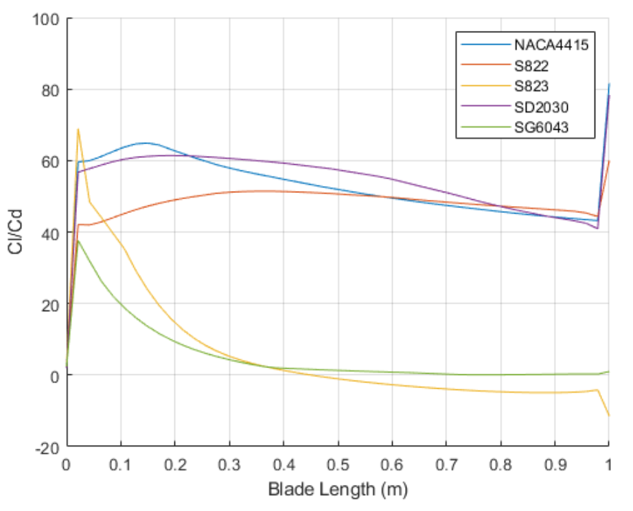
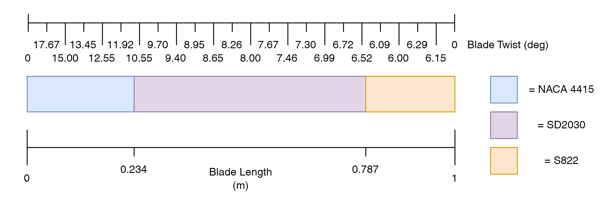
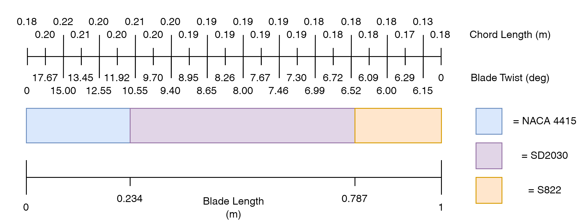
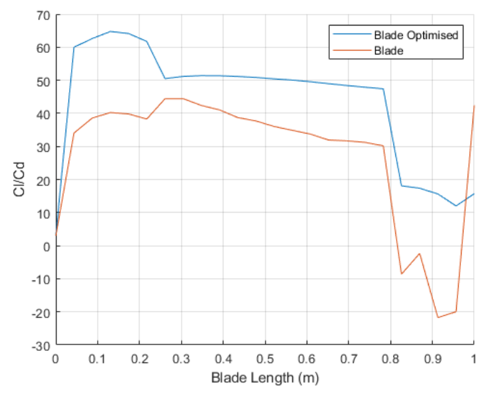

Blade Optimisation
During this project various optimisation techniques were used to create an optimal blade for a domestic small-scale wind turbine. The blade design while being optimal also needed to conform to the General Permitted Developments Order 2015: Class H - installation or alteration etc of wind turbine on domestic premises. In order to analyse the blade at each stage of optimisation a software was used called Ashes which is an industrial grade aerodynamic software package.
As with any optimisation it is important to initially set out design constraints required by the brief to allow a meaningful result to be generated in less time. The first constraint that was generated was regarding the length of the blades. The General Permitted Development Order 2015 states that the swept area of the blade should not be greater than 3.8m^2 and combining this with a hub to blade length ratio similar to that of commercially available turbines it was decided that the length should be 1 metre in length. The next constraint was the incoming wind speed for which 4.37m/s was used as this is the average uk wind speed. Finally, the number of blades on the turbine was set to 3 as this is the most efficient for extracting energy from the wind according literature.
Not only does the optimisation need constraints but it also needs and objective and strategy. The objective for optimising wind turbine blades could be a variety of things including reducing cost, maximising efficiency and maximising power output. Maximising the power output was deemed as the more important factor in wind turbine design therefore will be the objective for the optimisation. Cost could also be an objective for large scale wind turbines in wind farms due to the greater costs involved however this is not the case for small domestic turbines. In terms of strategy the potential parameters that can be adjusted in wind turbine blade are:
- Aerofoil Shape
- Twist Distribution
- Chord Length Distribution
- Tip Speed Ratio (TSR)
- Incoming Wind Speed
- Number of Blades
The wind speed and number of blades have already been constrained therefore there are 4 parameters left. TSR is linked to the blade length and rotations speed, both of which have already been accounted for, therefore will not be included. Aerofoil shape was the first variable to be optimised and literature was consulted to find multiple well performing aerofoil shapes and then optimise them along the length of the blade. The other two parameters twist angle and chord length can be optimised using a fminbound optimiser. While this is only a local optimiser, due to the small design space, this shouldn't be a problem and both twist angle distribution and chord length distributions can be created.
With the strategy for optimisation decided it now needed to be enacted. Firstly, to select Aerofoils, literature was to be consulted however in order to incorporate the aerofoil shapes into the analysis software Reynolds numbers needed to be set. For this optimisation Reynolds numbers between 10^4 and 10^6 were used. The suggested aerofoils were the NACA 4415, SD2030, SG6043, NREL S822 and NREL S823. These were tested in the Ashes software using a simple model and the results are shown below:
As can be seen in the chart different aerofoils perform better or worse at different lengths along the blade. This led to an aerofoil distribution being created for the length of the blade that incorporates the best aerofoil at each stage ignoring the spike of the S823 at the beginning due to this being assumed as error.
Next the twist angle was optimised for by splitting the blade into 24 separate sections and finding the best angle for each, given the aerofoil shape. This resulted in the angles seen in the diagram below which makes sense as when the blade is spinning slower nearer to the hub the twist will need to be greater to product lift.
Once this had been completed for the Twist Angle, The same process was repeated for the Chord Length resulting in the distribution seen in the diagram below.
With the optimisation complete the blade could be compared against the original to validate the improvement. As seen in the chart the optimised blade performs better across the entire length by a decent margin suggesting the optimisation was a success.
Given more time on the project better results could have been obtained using a genetic algorithm or testing a wider range of aerofoils however given the timescale of the project it was considered a success.